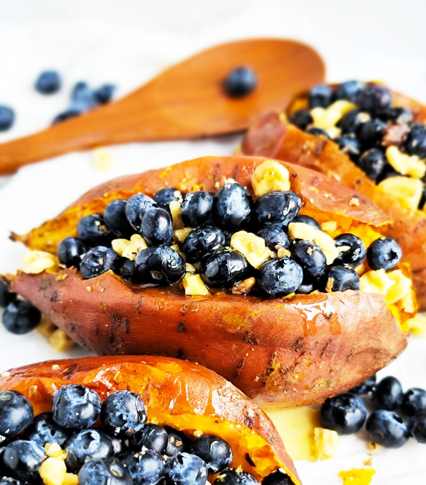

Stuffed Breakfast Sweet Potatoes

Description
Looking for a sweet and healthy start to your morning? Look no further! This is a delicious recipe for a stuffed sweet potato that carried me through most of college. It's customizable, relatively cheap, easy to make, and has lots of health benefits.
For this recipe all you will need is at least one sweet potato (the recipe is for 4, but feel free to scale as needed), some sweet fruit of your choice, nut butter, maple syrup, and a bit of salt.
Ingredients
- 4 small sweet potatoes
- 1 tbsp of almond butter
- mixed berries, or fruit of your choice (apples and bananas work great!)
- 1 tbsp of maple syrup
- pinch of salt
Steps
- preheat your oven to 375 (or skip this step if you would rather use the microwave)
- poke holes using a fork all over your sweet potatoes
- either roast your sweet potatoes for 40-50 minutes in the oven or 6-8 minutes in the microwave
- use a knife to cut a vertical slit from top to bottom on the top side of the potato
- use a fork to press the sides down and spread almond butter on both insides
- top with fruit, syrup and salt
- enjoy!